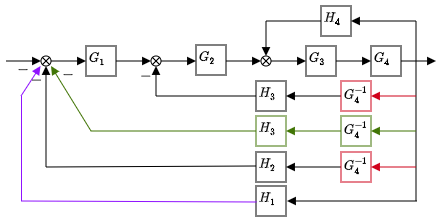

Block Diagram¶
Series, Parallel and Feedback¶
from sympy import symbols, prod,simplify
def series(*argv):
return prod(argv)
def parallels(*argv):
return sum(argv)
def negative_feedbacks(G, *argv):
ret = G
for k in range(len(argv)):
ret = ret / (1 + ret * argv[k])
return ret
def positive_feedbacks(G, *argv):
ret = G
for k in range(len(argv)):
ret = ret / (1 - ret * argv[k])
return ret
Example 1¶
Simplify the following block diagram:
Our first step is to modify the block diagram such that it contains ony three connection configurations:
serial connections
parallel connections
feedback connections (positive or negative)
The next figure presents the modified block diagram that is composed only by those three connections.

M1 = series(G3, G4)
M2 = positive_feedbacks(M1, H4)
M3 = series(M2, G2)
M4 = negative_feedbacks(M3, H3/G4)
M5 = series(M4, G1)
G = negative_feedbacks(M5, H3/G4, H2/G4, H1)
Or we can combine them into one line of codes:
G = negative_feedbacks(series(negative_feedbacks(series(positive_feedbacks(series(G3, G4), H4), G2), H3/G4), G1), H3/G4, H2/G4, H1)
G1, G2, G3, G4, H1, H2, H3, H4 = symbols('G1 G2 G3 G4 H1 H2 H3 H4')
G = negative_feedbacks(series(negative_feedbacks(series(positive_feedbacks(series(G3, G4), H4), G2), H3/G4), G1), H3/G4, H2/G4, H1);
display(simplify(G))
\[\displaystyle \frac{G_{1} G_{2} G_{3} G_{4}}{G_{1} G_{2} G_{3} G_{4} H_{1} + G_{1} G_{2} G_{3} H_{2} + G_{1} G_{2} G_{3} H_{3} + G_{2} G_{3} H_{3} - G_{3} G_{4} H_{4} + 1}\]